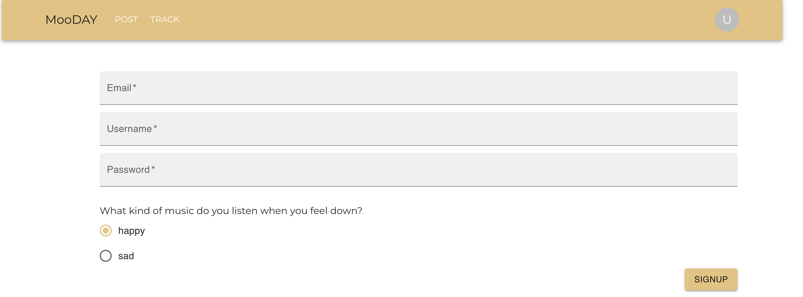
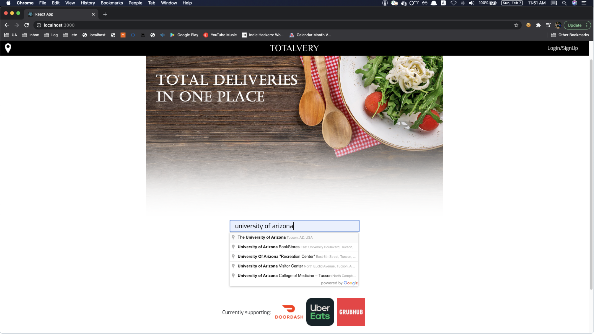
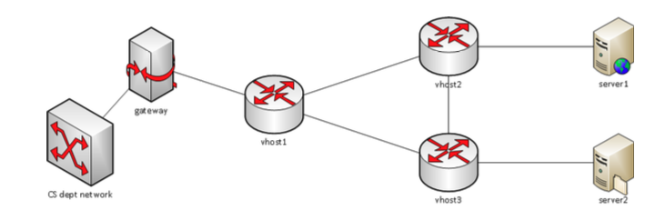

MooDAY

I am a backend and full-stack software engineer on a trading systems team at Nomura Securities, where I joined as an intern and have since spent two years building and operating the systems that keep trading compliant and reliable. I work mainly on pre-trade controls and trade validation, collaborating with global teams across New York, London and Tokyo. I enjoy finding problems that keep recurring and solving them with the right technology, and I believe collaboration produces better solutions than working alone.
Nomura Securities International, Inc
Software Engineer ( - )
Nomura Securities International, Inc
Software Engineering Intern ( - )
University of Arizona, CLU Lab
Research Assistant ( - )
MooDAY

TotalVery

PWOSPF

University of Arizona
Computer Science, Masters - -
University of Arizona
Computer Science, BS - -
Certifications
AWS Certified Cloud Practitioner -
MooDAY
TotalVery
PWOSPF Protocol Router